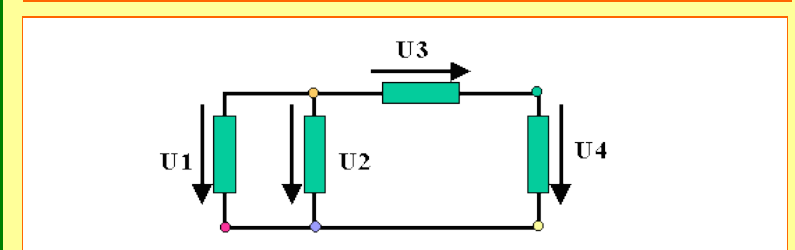
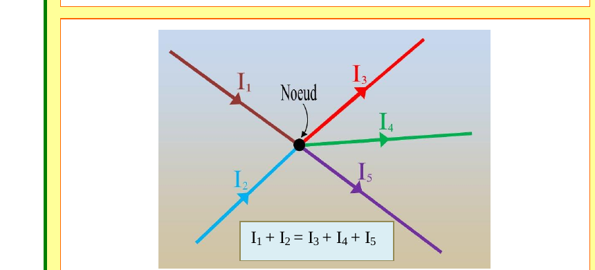
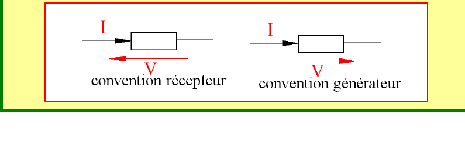
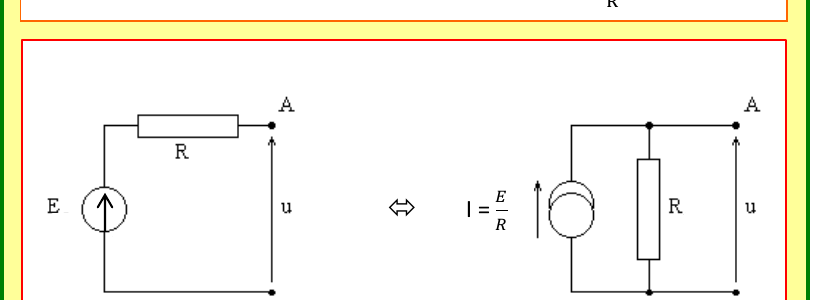
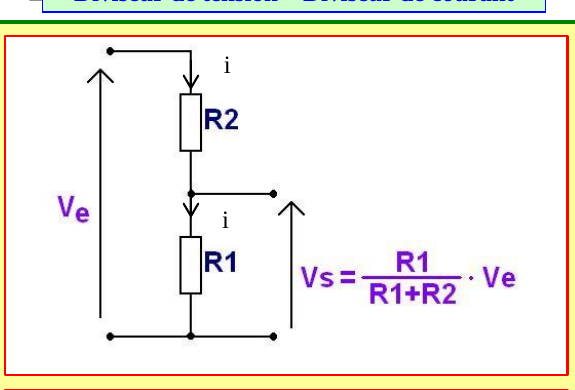
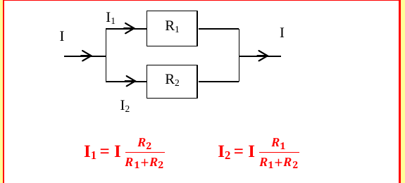
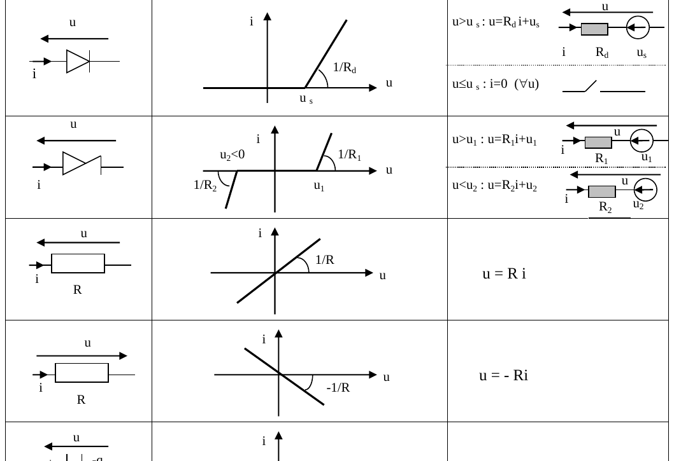
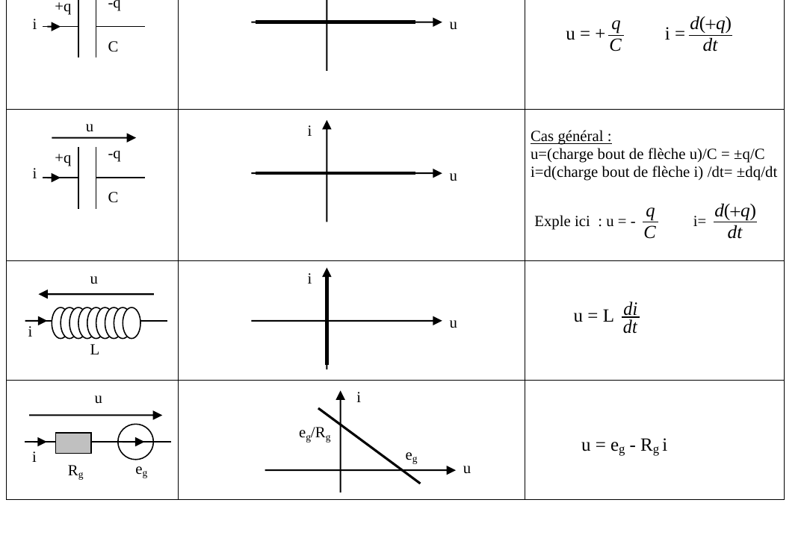

Électricité 1 — Les dipôles
1. Lois générales de l'électricité
Théorème 1 — loi des mailles
La somme des différences de potentiel orientées le long d'une maille (boucle fermée) d'un circuit est nulle.
Théorème 2 — loi des nœuds
La somme algébrique des courants arrivant à un nœud est nulle (courants entrants = courants sortants).
Définition 1 — intensité
Le courant électrique résulte d'un déplacement de charges : $i = \dfrac{dq}{dt}$.


2. Convention générateur – Convention récepteur
Définition 2
Pour un dipôle quelconque, on choisit une orientation pour la tension $u$ et le courant $i$ à ses bornes :
- Convention récepteur : les flèches $i$ et $u$ sont en sens opposés.
- Convention générateur : les flèches $i$ et $u$ sont dans le même sens.

3. Équivalence Thévenin – Norton
Théorème 3
Un générateur de tension réel (générateur de Thévenin, f.é.m. $E$ et résistance $R$ en série) est équivalent à un générateur de courant réel (générateur de Norton, courant $I$ et résistance $R$ en parallèle) si :
$$I = \frac{E}{R}$$

4. Puissance consommée par un dipôle
Définition 3
Soit $D$ un dipôle quelconque (actif ou passif) en convention récepteur. La puissance consommée par $D$ est :
$$P = u \cdot i$$
Propriété 1
Pour une résistance $R$ : $P = R\,i^2$.
Remarques
$P>0 \Leftrightarrow$ le dipôle est un récepteur ; $P<0 \Leftrightarrow$ le dipôle est un générateur.
La puissance est la dérivée de l'énergie par rapport au temps : $P = \dfrac{d\,\text{Énergie}}{dt}$.
La puissance est la dérivée de l'énergie par rapport au temps : $P = \dfrac{d\,\text{Énergie}}{dt}$.
5. Diviseur de tension – Diviseur de courant
Théorème 4 — diviseur de tension
Pour deux résistances $R_1,R_2$ en série alimentées par $V_e$, la tension $V_s$ aux bornes de $R_1$ (la plus proche du potentiel de référence) vaut :
$$V_s = \frac{R_1}{R_1+R_2}\cdot V_e$$
Théorème 5 — diviseur de courant
Pour deux résistances $R_1,R_2$ en parallèle traversées par un courant total $I$ :
$$I_1 = I\,\frac{R_2}{R_1+R_2} \qquad I_2 = I\,\frac{R_1}{R_1+R_2}$$
Remarque
Dans le diviseur de courant, le courant dans une branche est proportionnel à la résistance de l'autre branche : plus une résistance est grande, moins elle laisse passer de courant.


6. Les principaux dipôles
Pour chaque dipôle, le tableau ci-dessous donne le symbole (avec l'orientation choisie pour $u$ et $i$), l'allure de la caractéristique $i(u)$, puis l'équation correspondante.


Remarque — condensateur, cas général
Pour le condensateur, $u$ vaut $\pm q/C$ selon que l'armature chargée $+q$ correspond ou non à la pointe de la flèche $u$ ; de même $i=\pm dq/dt$ selon l'armature vers laquelle pointe la flèche $i$. Dans l'exemple de la seconde orientation (Fig. 6b), on a $u=-q/C$ et $i=\dfrac{d(+q)}{dt}$.
Quiz de fin de chapitre
1. Quelle est la différence entre la convention récepteur et la convention générateur ?
Réponse
En convention récepteur, les flèches $u$ et $i$ sont orientées en sens opposés à travers le dipôle ; en convention générateur, elles sont orientées dans le même sens (Définition 2). C'est cette convention qui donne son sens à la formule $P=ui$ (puissance reçue positive si le dipôle consomme réellement).
En convention récepteur, les flèches $u$ et $i$ sont orientées en sens opposés à travers le dipôle ; en convention générateur, elles sont orientées dans le même sens (Définition 2). C'est cette convention qui donne son sens à la formule $P=ui$ (puissance reçue positive si le dipôle consomme réellement).
2. Pourquoi la loi des mailles s'écrit-elle « somme des tensions = 0 » et non « somme des tensions = tension totale » ?
Réponse
Parce qu'on additionne des tensions orientées le long d'une boucle fermée qui revient à son point de départ : le potentiel électrique étant une fonction du point (pas du chemin suivi), la somme des variations de potentiel sur un trajet fermé est nécessairement nulle (Théorème 1).
Parce qu'on additionne des tensions orientées le long d'une boucle fermée qui revient à son point de départ : le potentiel électrique étant une fonction du point (pas du chemin suivi), la somme des variations de potentiel sur un trajet fermé est nécessairement nulle (Théorème 1).
3. Deux résistances $R_1=100\,\Omega$ et $R_2=300\,\Omega$ sont en série, alimentées par $V_e=8\,\text{V}$. Calculer $V_s$ aux bornes de $R_1$.
Réponse
$V_s = \dfrac{R_1}{R_1+R_2}V_e = \dfrac{100}{400}\times 8 = 2\,\text{V}$ (Théorème 4).
$V_s = \dfrac{R_1}{R_1+R_2}V_e = \dfrac{100}{400}\times 8 = 2\,\text{V}$ (Théorème 4).
4. Un générateur de Thévenin a pour f.é.m. $E=12\,\text{V}$ et résistance interne $R=6\,\Omega$. Donner le courant $I$ de son générateur de Norton équivalent.
Réponse
$I = E/R = 12/6 = 2\,\text{A}$ (Théorème 3).
$I = E/R = 12/6 = 2\,\text{A}$ (Théorème 3).
5. Pourquoi le signe de la puissance $P=ui$ (en convention récepteur) permet-il de savoir si un dipôle « fournit » ou « consomme » de l'énergie, sans rien connaître de sa nature physique ?
Réponse
Parce que $P$ est définie comme la dérivée de l'énergie reçue par le dipôle par rapport au temps (Remarque, §4) : si cette dérivée est positive, l'énergie du dipôle augmente (il reçoit vraiment de l'énergie, c'est un récepteur) ; si elle est négative, il en restitue au reste du circuit (générateur) — ce raisonnement énergétique est indépendant de la technologie du dipôle (résistance, moteur, batterie...).
Parce que $P$ est définie comme la dérivée de l'énergie reçue par le dipôle par rapport au temps (Remarque, §4) : si cette dérivée est positive, l'énergie du dipôle augmente (il reçoit vraiment de l'énergie, c'est un récepteur) ; si elle est négative, il en restitue au reste du circuit (générateur) — ce raisonnement énergétique est indépendant de la technologie du dipôle (résistance, moteur, batterie...).
6. Que se passe-t-il sur le diviseur de courant (Théorème 5) si $R_2\to\infty$ (branche 2 ouverte) ?
Réponse
$I_1 = I\cdot R_2/(R_1+R_2) \to I$ et $I_2 = I\cdot R_1/(R_1+R_2)\to 0$ : tout le courant passe par $R_1$, aucun ne traverse la branche ouverte — comportement physiquement attendu, qui confirme la cohérence de la formule.
$I_1 = I\cdot R_2/(R_1+R_2) \to I$ et $I_2 = I\cdot R_1/(R_1+R_2)\to 0$ : tout le courant passe par $R_1$, aucun ne traverse la branche ouverte — comportement physiquement attendu, qui confirme la cohérence de la formule.
7. Piège classique : peut-on dire qu'une résistance « obéit toujours à $u=Ri$ », quelle que soit la convention choisie sur le schéma ?
Réponse
Non — le tableau des dipôles usuels (§6) montre bien deux cas : $u=Ri$ si les flèches $u,i$ sont dans un sens, $u=-Ri$ si elles sont dans l'autre. La loi d'Ohm ne change pas physiquement, mais son écriture algébrique dépend de la convention de fléchage choisie sur le schéma — un piège classique en début d'année.
Non — le tableau des dipôles usuels (§6) montre bien deux cas : $u=Ri$ si les flèches $u,i$ sont dans un sens, $u=-Ri$ si elles sont dans l'autre. La loi d'Ohm ne change pas physiquement, mais son écriture algébrique dépend de la convention de fléchage choisie sur le schéma — un piège classique en début d'année.
8. Piège classique : dans le diviseur de tension (Théorème 4), pourquoi $V_s$ contient-il $R_1$ au numérateur et non $R_2$ ?
Réponse
Parce que $V_s$ est mesurée aux bornes de $R_1$ précisément (Fig. 5) : la tension aux bornes d'une résistance en série est proportionnelle à... sa propre résistance (et non celle de l'autre, contrairement au diviseur de courant où c'est l'inverse). Confondre les deux formules (tension ↔ propre résistance ; courant ↔ résistance de l'autre branche) est une erreur très fréquente.
Parce que $V_s$ est mesurée aux bornes de $R_1$ précisément (Fig. 5) : la tension aux bornes d'une résistance en série est proportionnelle à... sa propre résistance (et non celle de l'autre, contrairement au diviseur de courant où c'est l'inverse). Confondre les deux formules (tension ↔ propre résistance ; courant ↔ résistance de l'autre branche) est une erreur très fréquente.
9. Synthèse : reliez la loi des nœuds (Théorème 2) à la définition de l'intensité $i=dq/dt$ (Définition 1) — pourquoi la loi des nœuds traduit-elle une conservation de la charge électrique ?
Réponse
Un nœud ne peut pas accumuler de charge indéfiniment (il n'a pas de capacité propre) : la charge qui y entre par unité de temps doit être exactement celle qui en sort, sans quoi la charge stockée au nœud varierait, ce que la définition $i=dq/dt$ interdirait de concilier avec un nœud « ponctuel » sans réservoir de charge. La loi des nœuds (Théorème 2) est donc la traduction directe, au niveau d'un point du circuit, de la conservation de la charge électrique.
Un nœud ne peut pas accumuler de charge indéfiniment (il n'a pas de capacité propre) : la charge qui y entre par unité de temps doit être exactement celle qui en sort, sans quoi la charge stockée au nœud varierait, ce que la définition $i=dq/dt$ interdirait de concilier avec un nœud « ponctuel » sans réservoir de charge. La loi des nœuds (Théorème 2) est donc la traduction directe, au niveau d'un point du circuit, de la conservation de la charge électrique.
10. Synthèse : un générateur de Thévenin ($E,R$) alimente une résistance de charge $R_u$. Utilisez le diviseur de tension (Théorème 4) pour exprimer la tension aux bornes de $R_u$, puis retrouvez ce résultat en utilisant l'équivalent de Norton (Théorème 3) et le diviseur de courant (Théorème 5).
Réponse
Avec Thévenin : $R$ et $R_u$ sont en série alimentées par $E$, donc $U_{R_u} = \dfrac{R_u}{R+R_u}E$ (diviseur de tension). Avec Norton : $I=E/R$ alimente $R$ et $R_u$ en parallèle ; le courant dans $R_u$ est $I_{R_u}=I\cdot\dfrac{R}{R+R_u}=\dfrac{E}{R}\cdot\dfrac{R}{R+R_u}=\dfrac{E}{R+R_u}$ (diviseur de courant), d'où $U_{R_u}=R_u\,I_{R_u}=\dfrac{R_u}{R+R_u}E$ — on retrouve exactement le même résultat, ce qui illustre concrètement l'équivalence Thévenin-Norton (Théorème 3).
Avec Thévenin : $R$ et $R_u$ sont en série alimentées par $E$, donc $U_{R_u} = \dfrac{R_u}{R+R_u}E$ (diviseur de tension). Avec Norton : $I=E/R$ alimente $R$ et $R_u$ en parallèle ; le courant dans $R_u$ est $I_{R_u}=I\cdot\dfrac{R}{R+R_u}=\dfrac{E}{R}\cdot\dfrac{R}{R+R_u}=\dfrac{E}{R+R_u}$ (diviseur de courant), d'où $U_{R_u}=R_u\,I_{R_u}=\dfrac{R_u}{R+R_u}E$ — on retrouve exactement le même résultat, ce qui illustre concrètement l'équivalence Thévenin-Norton (Théorème 3).
Sources
- Document source : « Lois générales de l'électricité — Les dipôles » (résumé de cours, Prépa Barthou, Pau)
- Programme officiel de Physique-Chimie, CPGE 1re année (filière PCSI), bloc « Circuits électriques dans l'ARQS » : enseignementsup-recherche.gouv.fr
- H-Prépa Physique 1re année (Hachette Éducation) — chapitre « Circuits électriques, lois de Kirchhoff, théorèmes de Thévenin et Norton »